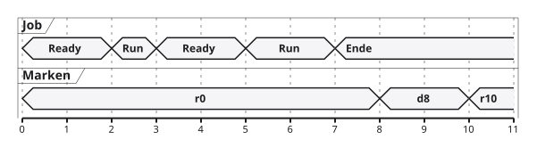
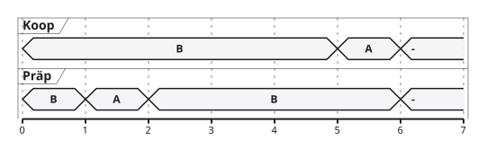
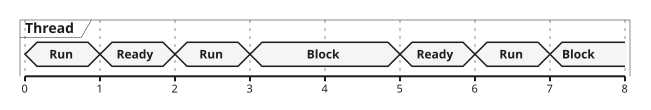
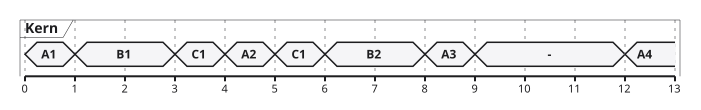
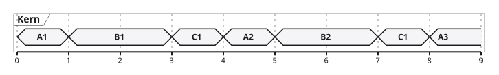
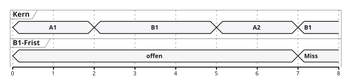
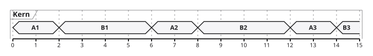
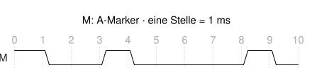

02 · Wer rechnet wann?
- Scheduling-Theorie auf einem Prozessor
- Aus einer Aufgabe werden Jobs mit Zeitparametern
- Regeln auswählen und Fristen begründet prüfen
- Prof. Dr.-Ing. Daniel Klünder · DHBW Stuttgart
Vorlesung 1 liefert die Grundlage
| Funktion und Rechtzeitigkeit |
Abschlussfrist jedes Jobs |
| Rechenbedarf und Antwortzeit |
Bedarf versus Wartezeit |
| Polling und Interrupt |
kooperative und erzwungene Unterbrechung |
| Messmaximum und sichere Schranke |
belastbare Modellparameter |
Fünf Ergebnisse dieses Termins
- Task und Job mit \(C\), \(T\), \(D\) und \(R\) beschreiben
- Auslastung von lokalen Fristproblemen unterscheiden
- Kooperativ, präemptiv und Auswahlregel auseinanderhalten
- RMS-Schranke, Antwortzeitanalyse und EDF richtig anwenden
- Einen kooperativen Dispatcher und seine Grenzen erklären
Vier Schulstunden: rechnen und vergleichen
| Modell und Auswahlregeln · Folien 1–25 |
45 |
| Fristnachweise und Umsetzung · Folien 26–50 |
45 |
| Fünf Papieraufgaben mit Besprechung |
50 |
| Vorbereiteter STM32-Vergleich |
25 |
| Quiz und gemeinsame Klärung |
15 |
| Gesamt |
180 |
Ein Job: eigene Arbeit und ganze Antwort
Lehrmodell · Zeit in ms · Kosten für Verwaltung hier null

Eine Task erzeugt einzelne Jobs
- Aufgabe: \(\tau_i\) mit Aufgabennummer \(i\)
- Ausführung: \(J_{i,k}\) mit Jobnummer \(k\)
- Freigabe, erster Start und Abschluss gehören zu einem Job
- Theoretische Task und Betriebssystem-Thread sind verschiedene Ebenen
Der eigene Bedarf wird nach oben begrenzt
- \(C_i\): angesetzte obere Grenze der eigenen Prozessorzeit
- WCET: Worst-Case Execution Time im benannten Betriebsmodell
- Warten auf den Prozessor zählt nicht zu \(C_i\)
- Messmaximum allein begründet keine sichere Schranke
Beispiel: \(C_i=2\,\mathrm{ms}\) sagt noch nichts über alle Wartezeiten.
Periode, Frist und Zeitpunkt unterscheiden
| \(T_i\) |
Abstand periodischer Freigaben |
| \(D_i\) |
zulässige Dauer ab einer Freigabe |
| \(d_{i,k}=r_{i,k}+D_i\) |
absolute Deadline des Jobs |
| \(R_{i,k}=f_{i,k}-r_{i,k}\) |
Antwortzeit des Jobs |
\(C_i=2\), \(T_i=10\), \(D_i=8\) · Zeiten in ms
Deadline-Klassen ändern die Testvoraussetzungen
| Implizit · implicit |
\(D_i=T_i\) |
| Beschränkt · constrained |
\(D_i\leq T_i\) |
| Beliebig · arbitrary |
keine solche Einschränkung |
Klassische RMS-Schranke und einfacher EDF-Auslastungstest: \(D_i=T_i\).
Freigaben können regelmäßig oder ereignisgetrieben sein
| Periodisch |
fester Abstand \(T_i\) |
| Sporadisch |
kleinster Abstand \(T_i\) |
| Aperiodisch |
ohne zugesicherten kleinsten Abstand |
Eine Anforderung braucht eine beschriebene zulässige Eingangslast.
Das Idealmodell macht den Nachweis überschaubar
- Genau ein Prozessor, unabhängige periodische Aufgaben
- Vollständige Präemption, begrenzte Bedarfe \(C_i\)
- Keine Sperren, kein Freigabejitter, keine Selbstsuspendierung
- Interrupt-, Auswahl- und Wechselkosten zunächst null
- Abschluss auf der Frist ist zulässig
Aus einer Funktion wird ein prüfbares Modell
Lehrannahme für einen Regler:
| \(C=2\,\mathrm{ms}\) |
gegebene Bedarfsschranke |
| \(T=10\,\mathrm{ms}\) |
regelmäßige Freigaben |
| \(D=8\,\mathrm{ms}\) |
vollständiger Abschluss ab Freigabe |
| Nachweisziel |
\(R\leq8\,\mathrm{ms}\) |
Eine Laufzeitpriorität übernimmt diesen Nachweis nicht automatisch.
Auslastung beschreibt den langfristigen Bedarf
\[U=\sum_{i=1}^{n}\frac{C_i}{T_i}\]
- \(n\): Anzahl der Aufgaben
- Summanden und \(U\) sind einheitenlos
- Ein Prozessor liefert höchstens einen Anteil von 1
- Bei \(U>1\) passt die dauerhafte Pflichtlast nicht
Das 75-Prozent-Set als erstes Beispiel
Zeiten in ms · \(D_i=T_i\) · erste Freigaben bei null
| \(\tau_1\) |
1 |
4 |
| \(\tau_2\) |
2 |
6 |
| \(\tau_3\) |
2 |
12 |
\(U=\frac14+\frac26+\frac2{12}=\frac34=75\,\%\)
40 Prozent können trotzdem unmöglich sein
Zwei Jobs werden bei null freigegeben:
- Je \(C=2\,\mathrm{ms}\) und \(T=10\,\mathrm{ms}\)
- Je \(D=3\,\mathrm{ms}\)
- Langfristig \(U=2/10+2/10=40\,\%\)
- Vor \(t=3\,\mathrm{ms}\) sind \(4\,\mathrm{ms}\) Arbeit gefordert
Vier Millisekunden passen nicht in drei Millisekunden eines Kerns.
Scheduler entscheidet, Dispatcher setzt um
%%{init: {'theme': 'base', 'flowchart': {'nodeSpacing': 30, 'rankSpacing': 25}, 'themeVariables': {'background': '#FFFFFF', 'primaryColor': '#FFFFFF', 'primaryBorderColor': '#E5E5EA', 'primaryTextColor': '#1D1D1F', 'lineColor': '#86868B', 'secondaryColor': '#F5F5F7', 'tertiaryColor': '#FFFFFF', 'clusterBkg': '#F5F5F7', 'clusterBorder': '#E5E5EA', 'edgeLabelBackground': '#FFFFFF'}}}%%
flowchart TD
A[Aufgaben und Zustände] --> B[Auswahlregel]
B --> C[Kontext starten]
C --> D[Arbeit ausführen]
D --> A
style B fill:#FFFFFF,stroke:#E2001A,stroke-width:2px !important
Kooperativ und präemptiv: anderer Startverzug
Lehrmodell · A kommt bei 1 ms, braucht 1 ms, Deadline bei 3 ms

Auswahlregel und Unterbrechung sind getrennte Achsen
| Wann neu auswählen? |
bei Rückkehr oder durch Präemption |
| Wen auswählen? |
fester Rang, Ring, früheste absolute Frist |
| Welches Ziel prüfen? |
Fristtreue, Wartezeit oder Fairness |
Ein Regelname ersetzt keine Annahme über den Kontrollfluss.
Kooperativer Round-Robin verteilt Aufrufe
Drei ständig bereite, zurückkehrende Schritte:
Ringfolge A, B, C · A-Starts bei 0, 5, 10, 15 ms
Präemptiver Round-Robin verteilt Zeitscheiben
Zwei gleichberechtigte Jobs mit je 2 ms Bedarf · Quantum \(q=1\,\mathrm{ms}\)
Ready ist nicht dasselbe wie Blocked
| Ready |
könnte rechnen, bekommt den Kern noch nicht |
| Running |
rechnet gerade auf dem Kern |
| Blocked |
wartet auf Zeit oder eine sachliche Bedingung |
Auf einem Kern ist höchstens ein Kontext Running.
Zwischen Jobs warten, innerhalb eines Jobs verdrängt
Lehrzustände eines Threads · Zeit in ms

Strikte Priorität kann niedrige Aufgaben aushungern
- High und Low bleiben dauerhaft Ready
- High hat den höheren festen Rang
yield gibt freiwillig ab, nimmt High aber nicht aus Ready- Die nächste Auswahl kann wieder High sein
- Blockieren und geprüfte Lastgrenzen ändern den Fall
Machbarkeit und Erfolg einer Regel unterscheiden
| Feasibility |
Gibt es irgendeinen zulässigen Plan? |
| Schedulability |
Hält die gewählte Regel alle Fristen? |
Vier Millisekunden Bedarf vor 3 ms sind für jede Regel unmöglich.
Eine Regel kann aber auch an einem grundsätzlich machbaren Set scheitern.
Was ein Test wirklich entscheidet
| Hinreichend |
Erfolg im Modell bewiesen |
Frage kann offenbleiben |
| Notwendig |
Erfolg kann offenbleiben |
Erfolg widerlegt |
| Exakt im Modell |
Erfolg bewiesen |
Erfolg widerlegt |
Die Modellannahmen gehören zu jeder dieser Aussagen.
RMS: kürzere Periode, höherer fester Rang
Rate Monotonic Scheduling · Rate \(=1/T_i\)
| \(\tau_1\) |
4 ms |
höchster |
| \(\tau_2\) |
6 ms |
mittlerer |
| \(\tau_3\) |
12 ms |
niedrigster |
Die Rangfolge bleibt zwischen den Jobs gleich.
Die klassische RMS-Schranke gilt unter Bedingungen
- Unabhängige periodische Aufgaben auf einem Kern
- Feste Ränge nach Periode, vollständige Präemption
- Für jeden Job: \(D_i=T_i\) und Bedarf höchstens \(C_i\)
- Keine Sperren, kein Jitter, keine Selbstsuspendierung
- Verwaltungs- und Interruptkosten im Lehrmodell null
Liu und Layland: eine hinreichende Schranke
\[U\leq U_{\mathrm{LL}}(n)=n\left(2^{1/n}-1\right)\]
| 1 |
100 % |
| 2 |
82,84 % |
| 3 |
77,98 % |
| 4 |
75,68 % |
Bestanden beweist RMS-Erfolg unter den genannten Annahmen.
75 Prozent: die einfache Schranke entscheidet
Für drei Aufgaben und das gegebene Set:
- \(U=75\,\%\)
- \(U_{\mathrm{LL}}(3)\approx77{,}98\,\%\)
- Daher unter RMS im Idealmodell nachgewiesen
- Ein anderes Auswahlverfahren braucht seinen eigenen Nachweis
Die Zeichnung illustriert den Test, sie ersetzt ihn nicht.
Präemptives RMS im 75-Prozent-Set
Lehrablauf in ms · A: \(\tau_1\), B: \(\tau_2\), C: \(\tau_3\) · Ziffer: Jobnummer

Der kritische Freigabezeitpunkt
Im unabhängigen präemptiven Modell mit festen Rängen:
- Ein Job kommt gemeinsam mit allen höher priorisierten Aufgaben
- Dadurch entsteht sein kritisches Störungsfenster
- Kein gemeinsamer Prozessorstart: nur einer kann rechnen
- Sperren, Freigabejitter oder Selbstsuspendierung brauchen andere Analysen
Antwortzeit iterativ berechnen
Feste Prioritäten · \(D_i\leq T_i\) · Grundmodell
\[R_i^{(0)}=C_i\]
\[R_i^{(k+1)}=C_i+\sum_{j\in hp(i)}\left\lceil\frac{R_i^{(k)}}{T_j}\right\rceil C_j\]
Stopp bei unverändertem Wert oder Überschreitung von \(D_i\).
Warum wird aufgerundet?
Ein höher priorisierter Störer mit \(T_j=5\,\mathrm{ms}\):
| 2 ms |
0 |
1 |
| 5 ms |
0 |
1 |
| 6 ms |
0, 5 |
2 |
Das Fenster ist halboffen: \([0,R)\).
85 Prozent: genauer prüfen
Zeiten in ms · \(D_i=T_i\) · RMS-Rangfolge \(\tau_1>\tau_2>\tau_3\)
| \(\tau_1\) |
1 |
4 |
\(1\to1\) |
| \(\tau_2\) |
2 |
5 |
\(2\to3\to3\) |
| \(\tau_3\) |
2 |
10 |
noch zu berechnen |
\(U=1/4+2/5+2/10=85\,\%\) · einfache Schranke unentschieden
Die dritte Antwortzeit wächst bis acht
Für \(\tau_3\): \(C_3=2\), Störer \((C_1,T_1)=(1,4)\) und \((C_2,T_2)=(2,5)\) · ms
| 2 |
1 |
1 |
5 |
| 5 |
2 |
1 |
6 |
| 6 |
2 |
2 |
8 |
| 8 |
2 |
2 |
8 |
Fixpunkt \(R_3=8\,\mathrm{ms}\leq D_3=10\,\mathrm{ms}\).
Der kritische Ablauf bestätigt die Rechnung
85-Prozent-Set · A: \(\tau_1\), B: \(\tau_2\), C: \(\tau_3\) · Zeit in ms

Über der Schranke heißt nicht gescheitert
Harmonisches Lehrset · \(D_i=T_i\):
| \(\tau_1\) |
2 ms |
4 ms |
| \(\tau_2\) |
4 ms |
8 ms |
\(U=100\,\%\) · \(R_1=2\,\mathrm{ms}\) · \(R_2:4\to6\to8\to8\,\mathrm{ms}\)
Beide Fristen halten im kostenfreien präemptiven Modell.
EDF vergleicht die absoluten Jobfristen
Earliest Deadline First:
- Unter den bereiten Jobs gewinnt das kleinste \(d_{i,k}\)
- \(d_{i,k}=r_{i,k}+D_i\)
- Neue Freigabe kann, muss aber nicht verdrängen
- Bei gleicher Deadline bleibt hier der laufende Job
Die Periode ist kein fester EDF-Prioritätsrang.
Wann ist der einfache EDF-Test exakt?
Eine CPU · unabhängige vollständig präemptive Aufgaben · \(D_i=T_i\)
\[U\leq1\quad\Longleftrightarrow\quad\text{unter EDF einplanbar}\]
- Begrenzte Bedarfe, keine zusätzlichen Kosten oder Warteursachen
- Nicht unverändert bei \(D_i<T_i\)
- Nicht durch einen zweiten Kern automatisch erweitert
97 Prozent: RMS verfehlt eine Frist
\(\tau_1:(C,T,D)=(2,5,5)\), \(\tau_2:(4,7,7)\) · ms · \(U=34/35\)

Dasselbe Set unter EDF
A: \(\tau_1\), B: \(\tau_2\) · Ziffer: Jobnummer · Zeit in ms

Neue Freigabe heißt nicht automatisch Präemption
EDF-Auswahl im 97-Prozent-Set:
| 5 ms |
\(\tau_2/J_1\), \(d=7\) |
\(\tau_1/J_2\), \(d=10\) |
laufender bleibt |
| 10 ms |
\(\tau_2/J_2\), \(d=14\) |
\(\tau_1/J_3\), \(d=15\) |
laufender bleibt |
Verglichen werden absolute Fristen, keine frischeren Freigaben.
Bei Überlast muss der Vertrag die Reaktion festlegen
Lehrfall: zwei Aufgaben mit je \(C=3\,\mathrm{ms}\), \(T=D=5\,\mathrm{ms}\)
- \(U=6/5=120\,\%\)
- Schon das erste 5-ms-Fenster verlangt 6 ms Arbeit
- Keine Auswahlregel kann beide aktuellen Fristen erfüllen
- Beenden, Verwerfen oder Budgetbegrenzen ändert den Vertrag
Welche Rechnung gehört zu welcher Umsetzung?
| RMS-Schranke |
passende feste Ränge und Präemption |
| Antwortzeitanalyse |
benannte Störer und Warteursachen |
| EDF-Auslastungstest |
implizite Deadlines im Idealmodell |
| Kooperativer Ring |
begrenzte zurückkehrende Schritte |
Echte Zusatzkosten und Ressourcenstörungen bleiben zu berücksichtigen.
Tick und PendSV haben unterschiedliche Rollen
| SysTick |
Zeitbasis und mögliche Auslösung einer Auswahl |
| PendSV |
aufgeschobene Ausnahme für Kontextwechsel |
| Handlerpriorität |
entscheidet, wann eine Ausnahme laufen darf |
Ein Wechsel kann auch nach einem anderen Interrupt vor dem nächsten Tick erfolgen.
Der Labor-Dispatcher bleibt in der Hauptschleife
CubeMX und VS Code mit STM32-Erweiterung · Anwendung auf Cortex-M4
%%{init: {'theme': 'base', 'flowchart': {'nodeSpacing': 30, 'rankSpacing': 25}, 'themeVariables': {'background': '#FFFFFF', 'primaryColor': '#FFFFFF', 'primaryBorderColor': '#E5E5EA', 'primaryTextColor': '#1D1D1F', 'lineColor': '#86868B', 'secondaryColor': '#F5F5F7', 'tertiaryColor': '#FFFFFF', 'clusterBkg': '#F5F5F7', 'clusterBorder': '#E5E5EA', 'edgeLabelBackground': '#FFFFFF'}}}%%
flowchart TD
H[HAL-Tickzeit] --> W[Wake-Zeiten prüfen]
W --> R[Im Ring auswählen]
R --> S[Schritt aufrufen]
S --> W
style R fill:#FFFFFF,stroke:#E2001A,stroke-width:2px !important
Verwaltungsdaten statt pausiertem Taskstack
Ausschnitt der C-Datenstruktur im Anwendungsbaustein:
typedef struct {
void (*step)(void);
TaskState state;
uint32_t wake_at;
} Lab02_TCB;
Ringcursor: nächster Suchbeginn · running_idx: nur während eines Aufrufs gültig
Wake-Zeit setzen beendet die Funktion nicht
Ausschnitt innerhalb eines aufgerufenen Schritts:
if (!Lab02_SleepAfterStep(10U)) {
Lab02_Fail();
}
return;
Blocked bis zum erreichten Tickziel · erneuter Aufruf erst nach Ringauswahl
Pulsbreite und Startabstand sind verschiedene Größen
Idealer Aufrufring · A und C je 1 ms, B zuerst 1 und dann 3 ms

\(w=1\,\mathrm{ms}\) · Startabstände \(P=3/5\,\mathrm{ms}\) · Spanne \(J_P=2\,\mathrm{ms}\)
Ein Nachweis gehört zu seinem Modell
- Aufgaben mit Bedarf, Freigabe und Abschlussfrist beschreiben
- Hinreichende Schranke und exakte Analyse unterscheiden
- 75 % und 85 % unter RMS nachgewiesen
- 97-%-Set: RMS scheitert, ideales EDF hält
- Vorlesung 3: echte Threads mit gespeichertem Kontext
Quellen: Buttazzo · Liu und Layland · ST PM0214, RM0399, UM2408